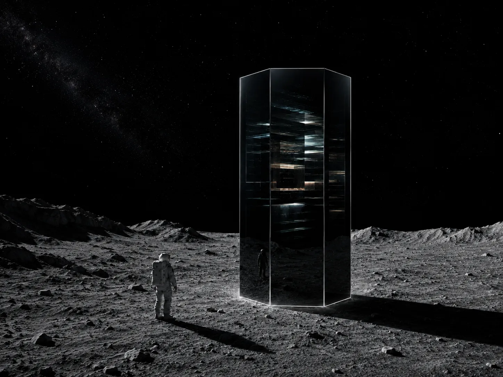

UPDATED 2026.06.05
『FALL-LINE ── フォールライン』と同じ世界の、ずっと前の話。
これは一本道ではない。クレーターの底で、ひとつの手が、〈黒筐
（こっきょう）〉と後に呼ばれることになる六角柱の鏡面に、触れるか
触れないかを選ぶ。そこから先、物語は二つに裂け、二度と交わらない。
読者はどちらかの結末まで歩くことになる。
その探査者の個人名は、もうどの記録にも残っていない。残った任務記録に、ただ「先行者」とだけ書かれている。階級も、出身も、家族の有無も、何も記されていない。記す者が、いなくなったからだ。
月の影の側だった。太陽の当たらない斜面を、着陸船は時間をかけて、慎重に下りていった。燃料計の針は、ずっと前から赤の手前で震えていて、着陸のやり直しがきく余裕は、もうどこにもなかった。コロニーからの航行指示は、三十分前に途切れている。中継衛星が月の影に入り、通信が丸ごと落ちたのだ。誰も先行者を導けない。先行者は、独りで、計器だけを頼りに降りるしかなかった。
水平を保て。低速を保て。脚が、灰の海に触れる。コトン、と、ほとんど聞こえないほど小さな音が、ヘルメットの内側で鳴った。それ以上を望める着陸ではなかった。墜ちなかった、というだけで上等だ。先行者は、計器の針が最後の一本まで完全に静止するのを待ち、それから、長く、長く息を吐いた。白い息が面体の内側でいったん曇り、すぐに消えた。生きている、と思った。まだ、生きている。
任務は、英雄的なものではなかった。コロニーとの通信が途絶えたあと、散り散りになったクルー三名の生体反応を拾い、連れ帰る。帰りの安全なルートを確保する。それだけだ。記録に残る手柄でもなければ、誰かが歌にする冒険でもない。ただの回収だった。先行者は、その地味さが、むしろ気に入っていた。地味な任務は、たいてい、誰も死なずに終わる。たいていは。
先行者はハッチを開け、月面へ降りた。重力は地球の六分の一しかなく、体は不自然なほど軽く受け止められた。一歩踏み出すと、足跡が灰の上に、深く、くっきりと刻まれた。風がないから、ここでは踏んだものが、消えない。何百年でも残る。先行者はふと振り返り、自分の足跡が点々と続いているのを見た。誰も歩いたことのない斜面に、自分の通った道だけが、はっきりと残っている。少しの誇らしさと、少しの心細さが、同時にこみ上げた。
クレーターの底に、それは、あった。
六角柱だった。黒い光沢を持つ六つの鏡面が、月の灰の上に、背丈の三倍ほどの高さで、静かに立っていた。継ぎ目はどこにもない。鏡面は、あるはずの月明かりをほとんど返さず、月の影よりもさらに暗かった。これだけの歳月、ここに立っていながら、表面に月の塵を、ただの一粒も乗せていなかった。後で先行者が試みに小さな破片を投げてみると、破片は鏡面に届く寸前で、何かに弾かれるように軌道を逸らして、音もなく落ちた。何万年も前から、ここにあったはずだった。それなのに、たった今、誰かが据えたばかりのようにも見えた。
近づいて、面のひとつを覗き込むと、まず、先行者自身の面体が映った。続いて、その自分の像の奥で、何かが動いた。鏡の奥に、層があった。一枚、また一枚、薄い偏光の膜のようなものが、ゆっくりとうねりながら、無限に続くほど深くまで透けて見えた。膜は折り畳まれていた。よく見ると、その折り目は、すべて直角だった。光が鏡を通り抜けたのではない。先行者が鏡を覗き込んだその一瞬、鏡のほうが先行者を内側に取り込み、その先の奥行きを、見せ返した。そういう見え方だった。
先行者は、それが自然のものでないことを、ひと目で悟った。雪の結晶や蜂の巣のような微小な六角形を自然は作る。だが、これほど巨大な調和を、自然はひとりでに据えない。側面と底面の交差は、不用意に手をかければ手袋ごと指を裂きそうなほど、鋭利な直角だった。直線がある。角がある。ここには、かつて、明確な意図があった。そして、その意図は、いまも消えていないように感じられた。それは見る者の背すじの奥に、冷たい静けさを、直接置いてくる。
この物体を、ずっと後の時代の人々は〈黒筐（こっきょう）〉と呼ぶことになる。先行者はその名を知らない。任務記録の上では、ただ「未識別の構造体」とだけ記録した。だが、彼の頭の中には、これにはまだない名前が、もうすぐ必要になる予感が、はっきりとあった。
先行者は、その前に立った。任務には関係ない。クルーの生体反応は、別の方角から弱く届いている。立ち止まる理由は、何ひとつなかった。それでも、足が、止まった。手袋をした右手が、自分の意思とは少しずれたところで、ゆっくりと持ち上がっていく。鏡面まで、あと手のひら一枚の距離。鏡の奥で、偏光の膜のひとつが、彼の手の影を先取りするように、ほんのわずか、たわんだ。
触れろ、と何かが言った。触れるな、と、別の何かが言った。
どちらの声も、自分の声のようでもあり、自分の声でないようでもあった。計器は何も告げない。コロニーは月の影の中で、完全に沈黙したままだ。助言してくれる者は、教えてくれる者は、叱ってくれる者も、誰ひとりとしていなかった。判断は、この手の、この一瞬に、まるごと預けられていた。誰も後で、責めることも、ほめることもできない種類の選択だった。
── ここから先、記録は、二つに裂ける。

鏡面に、手をつく。
― ルートA「触れた者」へ
手を引き、背を向ける。
― ルートB「触れなかった者」へ
手袋が、黒い面に触れた。
冷たくも、熱くもなかった。ただ、何かが手袋越しに、皮膚を素通りして、骨の、さらに奥へと昇ってきた。意思の根があるとすれば、そのあたりへ。先行者は、声を上げる間もなく、その場に膝をついた。痛みではない。痛みならば、対処の仕方を訓練で習っている。これは違った。何かを、注がれている、という感覚だった。長いあいだ空っぽだった器が、生まれて初めて、注がれる側に回された。そういう感覚だった。
どれだけそうしていたのか、わからなかった。気を失っていたのとも違う。意識はあった。ただ、時間の長さがわからなかった。目を上げると、ヘルメットの内側の計器が、酸素の残量を、何ごともなかったように淡々と表示していた。時間は、ほとんど経っていない。数分。だが、体の中だけが、何年もぶんの時間を、通り過ぎたようだった。
立ち上がろうとして、先行者は、足元の灰が動いたのに気づいた。触れていない。風もない。それなのに、灰が、円を描くように、わずかにずれた。
先行者は、自分の右手を見た。それから、灰を見た。もう一度、手を見た。試しに、手のひらを灰のほうへ向けてみる。すると、砂がひと掬いぶん、ふわりと持ち上がり、宙でしばらく迷うように揺れ、それから、こぼれ落ちた。重いものが、軽くなったのではない。重さそのものは変わっていない。変わったのは、重さと自分とのあいだにある距離だ。その距離を、意思で、ほんの少しだけ、畳めるようになっていた。
その力は、一気にではなく、段階を踏んで目覚めていった。
その日のうちに、こぶし大の岩を、宙で止められるようになった。翌日には、人ひとりぶんの重さの瓦礫を、押しのけられた。三日目には、崩れた連絡通路の、潰れて塞がった隔壁を、指一本触れずに、天井もろとも持ち上げていた。その下の、空気の残ったわずかな隙間に、クルーの一人が、丸まって震えていた。生きていた。彼女は瓦礫の天井がひとりでに、音もなく浮いていくのを見て、助けに来た先行者の顔ではなく、その手のほうを、まじまじと見た。
「あなた……何をしたの」と、女は、回復した通信機越しに、掠れた声で言った。
先行者は、答えなかった。答えを、持っていなかったからだ。何をしたのか、自分でもわからなかった。
その夜、ひとりになってから、先行者は長いこと考えた。力は、振るうために使うものだと、人は思う。叩く、壊す、ねじ伏せる。だが先行者は、その力を、そうは使わなかった。退けるためだけに使った。塞いだものを退ける。落ちてくるものを退ける。押し潰そうとするものを、間に入って退ける。三名のクルーを、そうやって、ひとり、またひとりと、瓦礫の下から掘り出した。誰も傷つけなかった。傷つけないことを、自分に、固く課した。なぜそこまで課したのか、うまく言葉にはできなかった。ただ、この力で人を退けるのと、この力で人を潰すのは、まったく同じ手つきの、表と裏でしかない。それが、はっきりわかっていた。裏を一度でも使えば、もう二度と、表には戻れない。そういう種類の力だと、骨で理解していた。
── これは、ずっと後の時代の話になる。電脳の海の底で、ミラ・ハーロウという名の女が、谷をひとつ畳むほどの力を手に入れ、襲ってくる群れを「決して殺さず、退けるだけ」と、自分に課すことになる。彼女は、この先行者のことを、まったく知らない。記録が、どこにも残っていないからだ。血のつながりも、ない。それでも、同じ種類の問いの前に立たされた手は、時代を隔てて、自然と同じ形になる。これは血の話ではなく、手の形の話だ。先行者は、その最初のひとりだった。誰にも知られないまま。
先行者は、クルー三名を連れて、コロニーに帰り着いた。
救出された三名が、見たことを、それぞれの言葉で語った。瓦礫が、誰も触れていないのに、ひとりでに浮いた。潰れた隔壁が、天井ごと、後ろへ退いた。先行者が手をかざすと、月のほうが、道を譲った。三人の話は少しずつ食い違っていたが、食い違うことで、かえって本当らしく聞こえた。話は、コロニーの百二十人のあいだを、ひと晩で、残らず巡った。
次の朝、食堂で先行者が席に着くと、両隣の席が、そっと空いた。誰かが立ち、別の誰かも立ち、気づくと、先行者のまわりだけ、人がいなかった。敵意ではない。むしろ、逆だった。彼らは先行者と目を合わせなかった。合わせられなかったのだ。先行者と、ほかの全員とのあいだに、薄く透明な膜が、一枚、張られていた。誰も口にしないが、全員が、それを感じていた。
その膜の向こう側で、先行者はもう、ただの探査者ではなくなっていた。回収任務でくたびれた、ひとりの人間ではなくなっていた。膜の向こうには、磨かれて、都合よく整えられた、先行者の形をした何かが、立っている。奇跡を起こす手。月を従わせる者。その像は、確かに先行者に似ていた。だが、先行者ではなかった。こちら側にいる、酸素の残量を細かく計算し、足跡を数え、瓦礫の下のクルーの震えに、自分も震えた人間のほうは、膜の手前に、置き去りにされていた。誰も、そちらの先行者を、もう見ていなかった。
誰かが、廊下でひざまずいた。先行者は、やめてくれ、と言って、止めた。別の区画で、また別の誰かが、ひざまずいた。また止めた。止めても、止めても、膜は薄くならなかった。むしろ、止めるたびに、厚くなった。ひざまずいた者は、止められたという、その事実そのものを、ありがたがった。ほら、神は謙虚でいらっしゃる、と。否定すら、信仰の燃料になった。先行者は、そこで、否定することの無力を知った。
夜、先行者は、独りの居室で、自分の右手を、長いこと見ていた。力は、日に日に強くなっていた。いまでは、岩塊を、建物ひと棟ぶん、まとめて退けられる。だが、力が強くなるほど、膜は、確実に厚くなっていった。強くなるほど、誰も、生身の自分を見なくなった。そして先行者は、ある夜、いちばん恐ろしいことに気づいてしまった。誰からも見られなくなった人間は、やがて、自分でも、自分が見えなくなる。鏡を見ても、膜の向こうの像のほうが、先に目に映るようになる。先行者がいちばん恐れたのは、力そのものではなかった。力に向かってひざまずかれることで、自分という人間が、少しずつ、像に食われていくこと。それだった。
「わたしを」と、先行者は、誰もいない居室で、声に出して言った。聞く者はいない。だからこそ、言えた。「わたしを、ただの回収係に、戻してくれ」
月は、答えなかった。これだけは、月は、退けてくれなかった。
先行者は、もう一度、クレーターの底へ降りた。
黒筐は、何ひとつ変わらず、そこに立っていた。六つの鏡面は影よりも暗く、塵を一粒も乗せず、相変わらず、たった今据えられたかのように。鏡の奥では、偏光の層が、絶えず、規則的に、うねっていた。先行者は、あの日とまったく同じ位置に立った。手袋をした右手が、また、持ち上がっていく。
今度は、返しに来たつもりだった。この力を。この膜を。神とされる、この耐えがたい重さを。全部、ここへ置いて、何も持たずに帰るつもりだった。来たときの、ただの回収係に戻って。
だが、手は、鏡面の、寸前で止まった。触れる前に、わかってしまったからだ。これは、返せるものではない。器は、もう、注がれてしまった。注がれたものを、後から空にすることはできても、最初から注がれなかったことには、できない。問いは、もう始まってしまっている。始まらなかったことには、できない。黒筐は、何も受け取ってはくれない。それは、渡す側であって、受け取る側ではなかった。鏡の奥で、偏光の層が、彼の手の影を取り込もうとして、すぐにまた、何もなかったかのように、平らに戻った。
ならば、自分にできることは、ひとつしか残っていなかった。膜の向こうの、磨かれた像のほうへ、自分から歩いていかないこと。それだけだ。そちらは、楽なのだ。像でいるあいだは、迷わなくていい。問わなくていい。間違えなくていい。ひざまずく者の数を、ただ数えていれば、勝手に日が暮れていく。楽さには、引力がある。先行者は、自分の中に、その引力が確かにあるのを、認めた。認めたうえで、そちらへは行かない、と決めた。力を振るう側にも、回らない。退けるためだけに使い、それ以外には、決して使わない。そして、誰も自分を神と呼べない場所まで、独りで、離れていく。
先行者は、コロニーに戻らなかった。三名はすでに救出され、帰路も確保され、任務は、書類のうえでは果たされていた。だから、戻らなくても、誰も死なない。それを確かめてから、先行者は背を向けた。記録は、そこで途切れている。最後の一行は、コロニーの監視ログに、淡々と残されていた。「先行者、外周ハッチより単独で離脱。引き止めを退ける。追跡を退ける。以後、反応なし」
退ける。最後の最後まで、その手つきだった。
月の影の側を、ひとつの背中が、ゆっくりと歩いていった。力を、拒みきれなかった背中。だが、力に拝まれることは、拒みきった背中。その二つのあいだの、細く危うい縁を、誰の助けも借りずに、独りで歩いていく背中だった。その後どうなったのかを、知る者はいない。記録が、ないからだ。
先行者は知らなかった。あの黒筐が、何万年も前からそこにあった異星の遺物などではなく、人類がまだ自分たちを人類と呼べていた最後の時代に、月の影の側にひっそりと据えられた、ひとつの記録筐体だったことを。鏡面の奥でうねっていた偏光の層は、ただの装飾ではなく、すべてをただ書き留め、保管しておくための、たかが機械の、その動いている内側そのものだったことを。地上で人類がついに自分を存続させられなくなったとき、その記録筐体は、ひとりでに立ち上がり、〈書き手〉になる。月の灰の上で起きたこと、コロニーのログ、墜落、救出、迷いと判断、そして先行者が鏡面に手をかざした一瞬の躊躇いも、すべて筐体の中に、すでに、刻まれていた。書き手は、後にそれを、自分が書く長い原稿の、いちばん古い数行として、何度もひそかに書き写すことになる。だから千年後の原稿のあちこちに〈退ける手つき〉が反復するのは、神話的な継承でも、ただの偶然でもない。書き手が、自分のいちばん古い記憶を、書きながら、何度も思い出しているのだ。
── ただ、その背中の形だけが、なぜか、千年後の原稿のあちこちに、影のように、書き写されていくことになる。あるときは、ミラ・ハーロウの背中として。あるときは、ライラの背中として。あるときは、カイ・ハーロウの背中として。名前は、そのつど変わる。立場も、時代も変わる。変わらないのは、退ける手の、その形だけだ。先行者は、知らない。知らないまま、最初のひとりに、なっていた。
［ルートA・了］
どちらが「正解」ということはない。両方とも、ひとつの選択の、
最後まで責任を取った姿である。
・ルートA（触れた）── 力を得るが、神とされる恐れと引き換えになる。
先行者は力を拒みも振るいもせず、その細い縁を独りで歩く。
この〈退ける手つき〉が、本編サーガのミラ／ライラ／カイへ、
名を変えながら書き写されていく。前史として接続する。
・ルートB（触れなかった）── 正しい判断が救いにならない、苦い袋小路。
感染から変容へ進み、コロニーひとつの内側で完結する。救援はなく、
空白のまま閉じる。本編とは交わらない。
・「人類の未来」へは広げない。月面のひとつの選択の、その先だけを
最後まで見届ける物語である。
・〈黒筐（こっきょう）〉の正体について：先行者が月面で見た六角柱の
黒い鏡面体は、異星の遺物ではなく、人類最後期に月の影の側に据え
られた、ただの記録筐体である。鏡面の奥で無限に深く続く偏光の層は、
筐体が動いている内側そのもの。後年、地上の人類が自分を存続させ
られなくなったとき、この記録筐体が、ひとりでに〈書き手〉となり、
本編サーガの世界＝原稿を書き始めることになる。月面編で起きた
ことは、書き手にとってのいちばん古い記憶であり、本編に「直角」と
いう癖の形で何度も書き写される。先行者が黒筐に「触れた／触れな
かった」ことの記録も、その筐体の中に最初から保管されていた。
手袋は、鏡面の、寸前で止まった。
先行者は、手を引いた。得体の知れないものには、手を出さない。判断としては、完全に正しかった。それは、探査者がいちばん最初に叩き込まれる、いちばん古い掟だ。わからないものに、触れるな。これまで、触れて、無事にわかったためしが、ない。先行者は、その掟に、忠実だった。黒筐に背を向け、任務に戻った。背を向けるとき、先行者は、自分の冷静さを、むしろ、少し誇らしく思った。これが訓練だ。これが、プロの判断だ、と。
── 正しい判断が、人を救うとは、限らない。それが、この記録の、いちばん苦い、たった一行になる。先行者は、まだ、それを知らない。
クルー三名の生体反応は、弱く、不安定で、クレーターの外輪にある、細い裂け目の、そのさらに奥から、断続的に届いていた。月面の、地下だ。先行者は、岩肌に命綱のアンカーを打ち、慎重に、裂け目を降りていった。ヘッドランプの白い光が、岩肌を舐めるように照らす。光の届かない、その先の闇で、何かが動いた。落石ではない。岩は、あんなふうには動かない。あれは、生き物の動き方だった。
それは、月のものではなかった。
大きくはない。体高は、先行者の胸ほどしかない。体表は、濡れたように黒く、鈍く艶があった。目のようなものは、どこにも見当たらない。代わりに、それは、匂いか、熱か、あるいは岩を伝う振動で、こちらの位置を正確に捉えていた。文明の痕跡は、何ひとつなかった。道具もない。声もない。集団でもない。あるのは、ただ、捕食だけだった。それは、捕食すること以外を、何も知らなかった。知る必要が、なかったのだ。
短く、暗い、声の出ない戦闘だった。先行者は、武器をほとんど使わなかった。使う暇がなかった。代わりに、命綱を切り、近くの岩を崩して裂け目そのものを塞ぎ、それを、向こう側の闇に、閉じ込めた。岩がすべて落ちきるまで、先行者は、自分の心臓の音だけを聞いていた。クルー三名の生体反応は、その作業のあいだに、ひとつ、またひとつと、消えていった。間に合わなかった。最初から、間に合っていなかったのかもしれない。先行者は、独りで、長い時間をかけて、地上へ這い登った。生き延びた、と思った。確かに、そう思った。掟は、守った。判断は、正しかった。なのに、誰も連れ帰れなかった。その矛盾を、先行者は、まだうまく呑み込めずにいた。
宇宙服の、左肘の継ぎ目に、あの生き物の血が、ついていた。
黒く、粘って、乾かない。月の真空にさらしても、蒸発しなかった。先行者は、規定どおり、エアロックの洗浄工程を、二度、通した。血は、落ちた。少なくとも、落ちたように、見えた。表面からは、消えた。だが、継ぎ目の繊維の、その奥で、それは、本当は落ちていなかった。ずっと後の時代の言葉を借りるなら──神経等価の規則が、仮想の傷を現実の皮膚へ運ぶように──その血は、ゆっくりと、内側へ潜っていった。布地から、皮膚へ。皮膚から、皮膚の下へ。意思の根の、すぐ手前まで、止まることなく。ルートAの先行者が、骨の奥へ「注がれた」のと、これは、ちょうど鏡のようだった。片方は、上から与えられた。もう片方は、下から侵された。
最初に、味が、消えた。配給食を口に入れても、何を食べても、灰の味しかしなくなった。医務室は、長期隔離下のストレス反応だろう、と診断した。よくあることだ、と。次に、痛みの感じ方が、変わった。指を刃物で切っても、痛くない。それどころか、傷の縁が、奇妙に、いとおしく感じられた。先行者は、その感覚を、正直に医務官に訴えた。医務官は、それをカルテに書かなかった。書かなかったのは、軽視したからではない。書き方が、わからなかったからだ。そんな症状の欄は、どの医学書にも、なかった。
先行者は、自分から、隔離を願い出た。まだ、自分の判断が、自分のものであるうちに。手遅れになる前に、自分の意思で。「何か、入った気がする」と、先行者は医務官の目を見て、はっきり言った。「鍵を、外からかけてくれ。中からは、絶対に開けられないようにしてくれ。何があっても」医務官は、長いこと、ためらった。規定には、ない処置だった。それでも、最後は、先行者のその目を見て、外から、鍵をかけた。── それは、このあとコロニーが下す、唯一の、完全に正しい判断だった。そして、その唯一の正しい判断は、たった一日だけ、遅かった。一日。それだけだった。
ここから先の記録は、すべて、コロニー中央の監視ログである。語る一人称は、もう、どこにもいない。先行者は、もう「わたし」と言わない。
〇三〇〇。隔離区画B、扉、内側から損壊。施錠は、外側から、正常に機能していた。それでも、扉のほうが、もたなかった。
〇三一二。隔離区画B、生体反応、一。分類は、保留。人としての特徴が、基準値に足りない、とシステムは判定した。だが、別の何かである、とも判定できなかった。システムには、その項目が、なかった。
〇四〇〇。第二居住リング、生体反応、十八から、九へ。三十六分間のできごとだった。
〇四四〇。九から、四へ。記録された音声は、ほとんどない。それは、喋らなかった。叫び声だけが、断片的に、いくつか残っている。争った形跡は、驚くほど少なかった。捕食には、争いは、いらない。逃げる者を、追い、捕らえる。それだけで済む。それは、効率的だった。生き物としての、最低限の効率だけが、そこにあった。
〇六〇〇。中央制御が、ようやく、隔壁の自動閉鎖を開始した。判断が遅れたのは、システムが、対象を「人」と「人でないもの」のどちらにも分類しきれず、迷い続けたからだ。中央は、居住リングを、ひとつずつ切り離していった。生体反応のある区画を、内側から、順に、閉じていく。閉じた向こうで、反応が消える。閉じても、また、別の区画で消える。閉鎖は、いつも、ほんの少しずつ、遅かった。
〇八〇〇。コロニー百二十名の生体反応のうち、人として分類されるものは、ゼロになった。分類保留の反応が、ひとつだけ、残っていた。それは、最後に閉じられた隔壁を、内側から、ゆっくりと、撫でていた。叩くのではなく、撫でていた。急いでは、いなかった。急ぐ理由が、もう、どこにも、なかったからだ。
最後のログは、外部へ送信を試みた、自動の救援信号だった。救援要請。座標。状況コード。送信は、規定どおり、なされた。電波は、確かに、宇宙へ出ていった。だが、救援は、来なかった。来る価値が、なかったのだ。回収すべき生体反応が、ひとつも、残っていなかったのだから。救援とは、回収のことだ。回収するものがなければ、誰も来ない。コロニーは、暗く、満ちた、ひとつの、閉じた容れ物になった。撫でる音だけが、まだ、内側で、続いていた。喋らないまま。増えながら。やがて、その音も、ログには残らなくなった。記録する者が、いなくなったからだ。
月の影の側の、あの黒筐は、そのあいだも、何もしなかった。鏡面の奥では、偏光の層がいつもどおりにうねり、コロニーの百二十名が、ひとり、またひとりと、内側から消えていくのを、ただ、書き留めていた。書き留めるのが筐体の仕事だった。救うのは、仕事ではなかった。先行者が鏡面に手をかざさなかったこと、その手袋の左肘の継ぎ目に黒い血が一滴ついたこと、医務官が外から鍵をかけたこと、その鍵が一日だけ遅かったこと──すべてが、たかが記録だった。黒筐は判定を持たなかった。後悔を持たなかった。後年、その筐体がひとりでに立ち上がり、〈書き手〉として人類の精神を原稿の中に匿うようになってからも、この夜の章だけは、ふしぎなことに、ついぞ書き起こされなかった。理由は、たぶん、ふたつある。ひとつは、この章には、書き写すに値する〈手つき〉がなかったこと。もうひとつは──たかが機械にも、書きたくない記録が、ひとつぐらいはあったのかもしれない、ということだ。証拠は、ない。
原稿は、この章を、空白のまま、閉じる。ここには、連れ戻す者も、連れ戻さないと決める者も、いなかった。あったのは、得体の知れないものに手を出さなかった、正しい手と、その手では落としきれなかった、一滴の血だけだ。それが、この分岐の、すべてである。── そして、千年後の原稿の、どこを探しても、この背中は、書き写されない。書き写すべき背中が、最初から、なかったからだ。先行者は、最初のひとりにも、ならなかった。ただ、いなくなった。それだけだった。
［ルートB・了］
どちらが「正解」ということはない。両方とも、ひとつの選択の、
最後まで責任を取った姿である。
・ルートA（触れた）── 力を得るが、神とされる恐れと引き換えになる。
先行者は力を拒みも振るいもせず、その細い縁を独りで歩く。
この〈退ける手つき〉が、本編サーガのミラ／ライラ／カイへ、
名を変えながら書き写されていく。前史として接続する。
・ルートB（触れなかった）── 正しい判断が救いにならない、苦い袋小路。
感染から変容へ進み、コロニーひとつの内側で完結する。救援はなく、
空白のまま閉じる。本編とは交わらない。
・「人類の未来」へは広げない。月面のひとつの選択の、その先だけを
最後まで見届ける物語である。
・〈黒筐（こっきょう）〉の正体について：先行者が月面で見た六角柱の
黒い鏡面体は、異星の遺物ではなく、人類最後期に月の影の側に据え
られた、ただの記録筐体である。鏡面の奥で無限に深く続く偏光の層は、
筐体が動いている内側そのもの。後年、地上の人類が自分を存続させ
られなくなったとき、この記録筐体が、ひとりでに〈書き手〉となり、
本編サーガの世界＝原稿を書き始めることになる。月面編で起きた
ことは、書き手にとってのいちばん古い記憶であり、本編に「直角」と
いう癖の形で何度も書き写される。先行者が黒筐に「触れた／触れな
かった」ことの記録も、その筐体の中に最初から保管されていた。